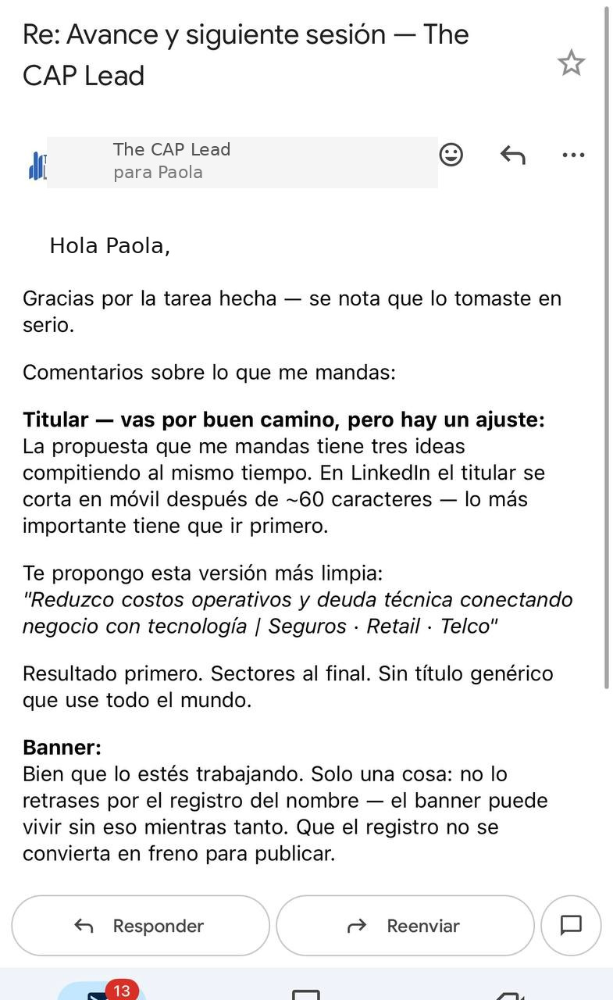

Cómo una emprendedora pasó de tener todo el material listo a lanzar su marca personal con estrategia, ICP definido y contenido que convierte.
El problema
Paola llegó porque me seguía en LinkedIn y reconocía algo en lo que yo hacía: la obsesión por la estructura. Ella ofrecía algo similar a lo que yo enseño — pero desde su propia perspectiva y experiencia.
La escuché. Y lo que encontré no fue falta de talento ni de contenido. Fue exceso de recursos sin orden: tenía metodología, materiales, trayectoria comprobada, ideas de producto. Pero no sabía exactamente a quién le hablaba, qué le ofrecía primero ni cómo posicionarse sin sonar genérica.
El problema clásico del emprendedor con mucho dentro y sin hoja de ruta para sacarlo. Le propuse estructurarlo juntos.
Diagnóstico
La intervención
Este caso muestra el modelo completo — Claridad, Autogestión y Potenciación — aplicado a una emprendedora en fase de lanzamiento.
La primera sesión (gratuita) fue un diagnóstico real: qué tenía, qué no tenía, y qué orden necesitaba. El entregable inmediato fue un plan de acción de alto nivel.
Una vez con claridad, Paola comenzó a ejecutar con autonomía. La mentoría pasó de construir estructura a acompañar la implementación.
Con contenido activo y audiencia en crecimiento, pasamos a optimizar: qué conecta, qué no, qué multiplicar.
La prueba
Este fue el entregable de su sesión de diagnóstico gratuita — antes de ser cliente. El nivel de detalle es el mismo desde el primer día.

Resultados
El caso de Paola demuestra algo importante: el framework CAP no es solo para managers o directivos. Es para cualquiera que tenga todo dentro pero no sepa en qué orden sacarlo.
Tenía todo el material. Lo que me faltaba era saber en qué orden usarlo — y con quién hablar primero.
Paola · Emprendedora · Consultoría y marca personal · Cliente activa
El primer paso es una sesión de diagnóstico de 45 minutos sin costo. Te llevas un plan de acción concreto — aunque no sigamos trabajando juntos.
Agenda tu sesión gratuita